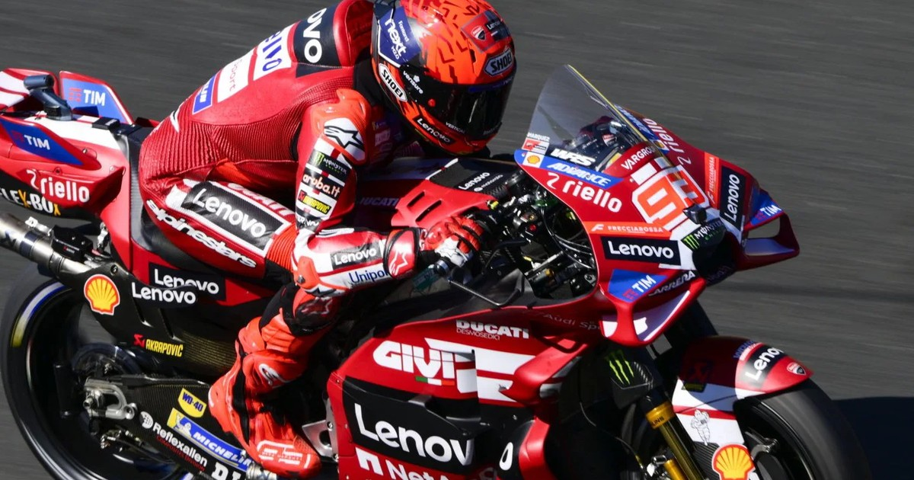

Marc Márquez announces his retirement from MotoGP — the reigning champion walks away at 33
Marc Márquez announced Friday morning at Valencia that this weekend's Grand Prix will be his last race, closing his MotoGP career as the reigning world champion — and walking away from a Ducati contract that ran through 2028.

Disclosure: this post contains affiliate links. I earn a commission on qualifying purchases.
The announcement
Marc Márquez announced Friday morning at Valencia that he is retiring from MotoGP, delivering the news himself in the Ducati pit box just minutes before the opening practice session of the season finale — holding up a series of placards to the television cameras.
"We'll talk later, but first … Thank you to everyone who's been part of this journey … I hope you've enjoyed it as much as I have. … This will be my last race in MotoGP. … We made history."
Ducati confirmed it on Friday: the Valencia Grand Prix, this Sunday, will be his final race as a professional rider and with the Ducati Lenovo team.
The shock is the timing. Márquez is not fading out. He clinched the championship last Sunday at Portimão, his second straight title with Ducati, and he held a contract that ran through 2028. He is leaving at the top, on his own terms.
Why now
Márquez made the decision in October, after winning the Japanese Grand Prix at Motegi, and told almost nobody. His brother Álex was the only person who knew; his father found out on Wednesday, Ducati on Thursday, and his mother on Friday morning. He kept it quiet so he could fight for the championship without the retirement talk draining him.
The reason, in his own words at the press conference that followed, is risk. "I feel competitive, I feel fast, but the reason is the risk," he said. "Sometimes you need to have a balance between risk and compensation. And right now, the compensation, or the thing that I can achieve is, OK, to win one more [title]. Maybe. But it was not the time to do it."
The injuries behind that calculation are extensive. He has had seven operations on his right arm and shoulder since 2019, the latest in May to remove two bent screws pressing on a nerve. And the double vision that first appeared after his crashes has returned — after the Indonesian Grand Prix crash last October and a highside at Le Mans this year. He admitted he has started to feel fear — not of the bikes or the speed, he stressed, but of what the injury could become.
The career
Márquez arrived in MotoGP in 2013 and leaves as one of the two most decorated riders the premier class has ever seen: eight premier-class world championships, a total matched only by Giacomo Agostini, and 10 world titles across all classes — moving him past Valentino Rossi's nine.
This final season was the comeback that sealed it. He started the year still carrying the effects of the Indonesian crash, missed races after the Le Mans crash, and at one point trailed the championship leader by 102 points. He closed the gap with seven Grand Prix victories and 10 sprint wins, clinching the title with a race to spare — and retires with 80 premier-class race wins, nine behind Rossi's 89.
What it means
Sunday's race in Valencia is now a farewell. Márquez goes out as the reigning champion, in front of a home crowd, with nothing left to prove — and MotoGP heads into its new 850cc era in 2027 without its biggest star.
"I arrived in MotoGP in my way, and I will go in my way," he said at the press conference. He did exactly that.
Sources
• MotoGP champion Marquez to retire after 2026 season (Reuters)
• Marc Marquez announces retirement from MotoGP (MotoGP.com)
• Marquez to retire from MotoGP after Valencia GP (Autosport)
• Eight-time MotoGP champion Marc Márquez announces surprise retirement (USA Today)
• Marc Marquez made MotoGP retirement decision in October after "fear" over injuries (Crash.net)
• Why Marc Marquez's shock MotoGP retirement is his greatest victory (Crash.net)
• Spaniard Marquez makes history with eighth MotoGP world title (SuperSport)
• Marc Márquez claims the MotoGP World Title (Ducati)
Gear up: Fanatics